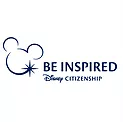
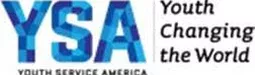

+
Eunoia was founded in July 2016 by a high school junior Grace Choi in Sacramento, CA. She started with a vision inspired by James 1:27 and decided to fulfill her longtime dream to start a non-profit that would benefit less fortunate teens in the Sacramento area. Her goal and prayer is that the organization grows from just being in the Sacramento area to being a nationwide organization that makes a big difference for those who need it most.
The non-profit has two parts: The first part is people in the community helping less fortunate teens and homeless youth. The second part is teens helping those in need in the community through community service.
What we are doing currently: (Projects/Events/Etc)
Planning a Musical Concert for October 28, 2017
2017 School Supply Drive
Religion that God our Father accepts as pure and faultless is this: to look after orphans and widows in their distress and to keep oneself from being polluted by the world // James 1:27
Winner of Disney's Summer of Service $500 grant in partnership with YSA (Youth Service America)
